大麻花
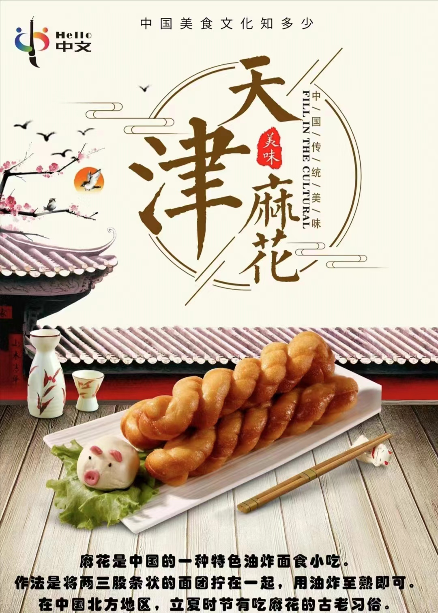 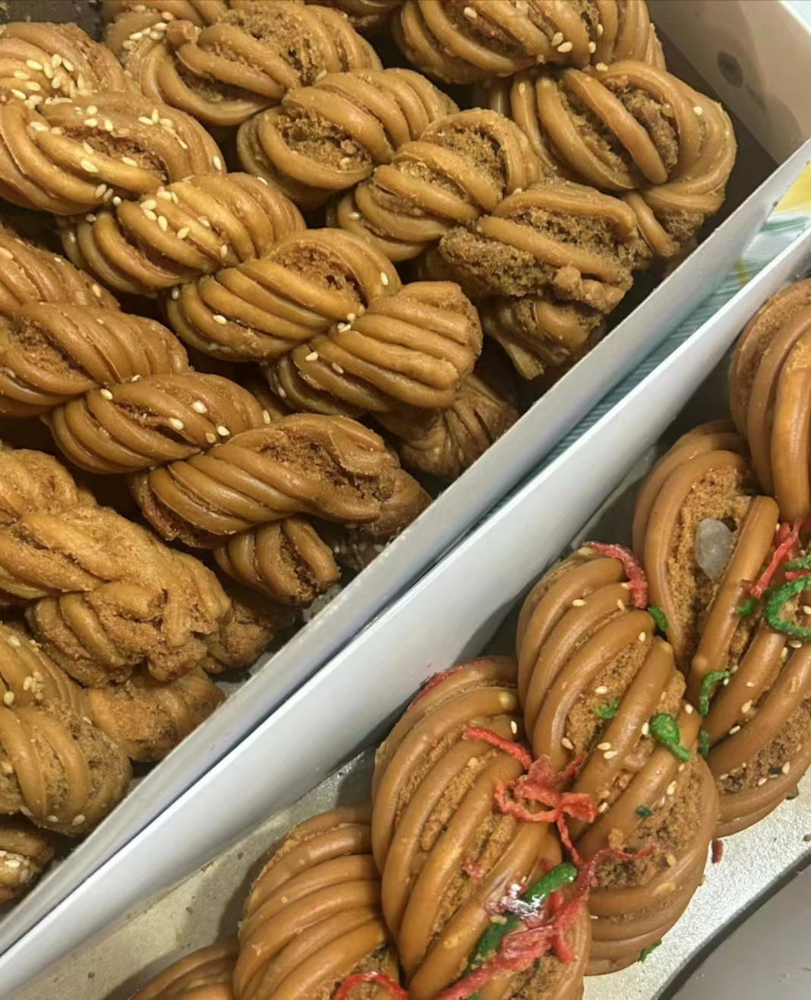 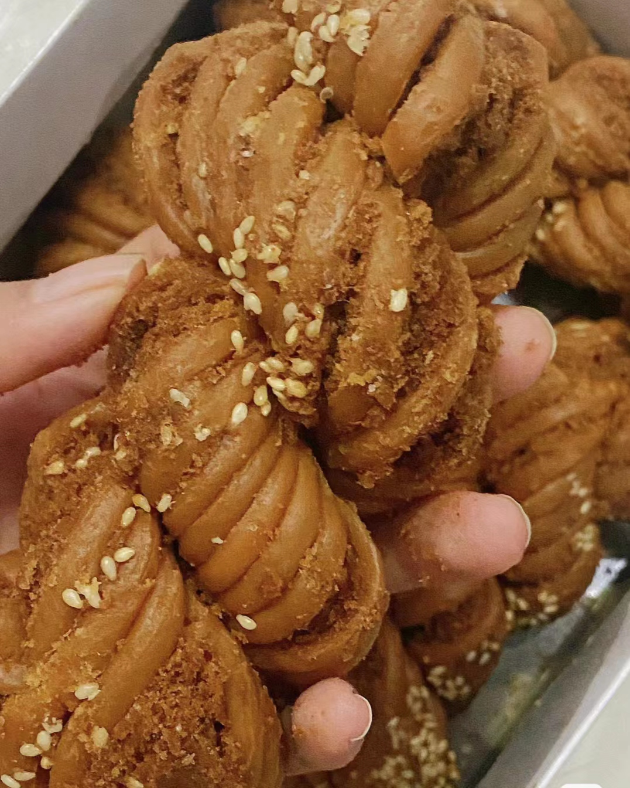
推荐店铺：桂发祥十八街麻花
价格：散装32元/斤，礼盒装要更贵一些
美食特色：天津大麻花作为一道传统小吃，无论老少都赞不绝口。白条跟麻条中间夹着的酥馅，使得味道丰富，口感细腻。再佐以桃仁、瓜条和桂花等，炸得香脆酥甜，令人欲罢不能。
推荐指数：五颗星
煎饼果子
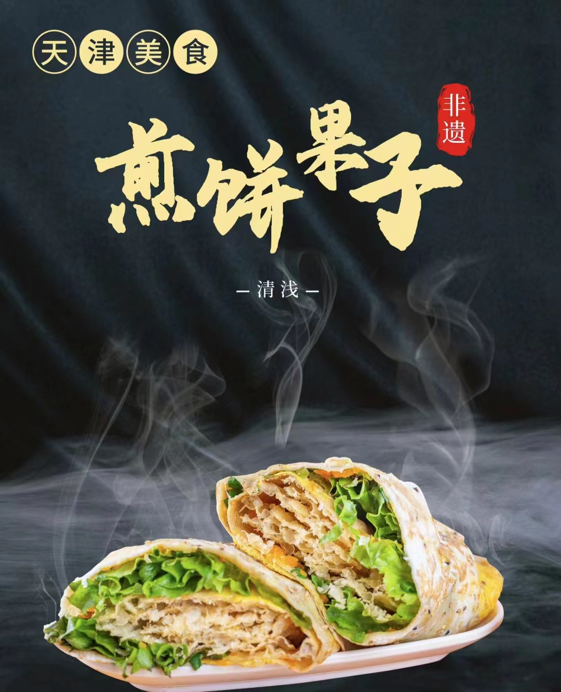 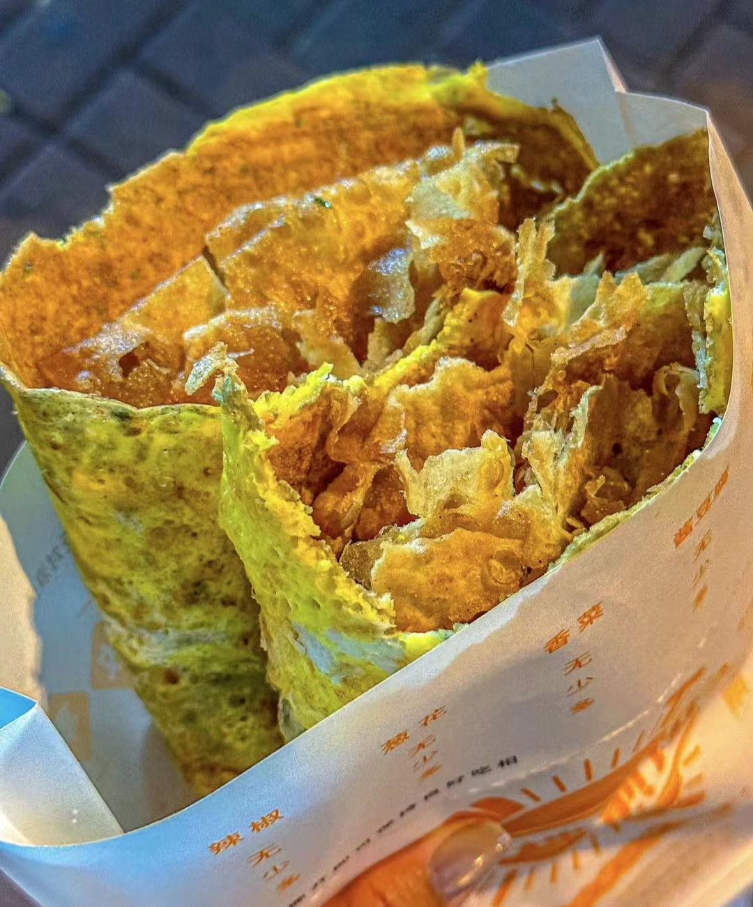 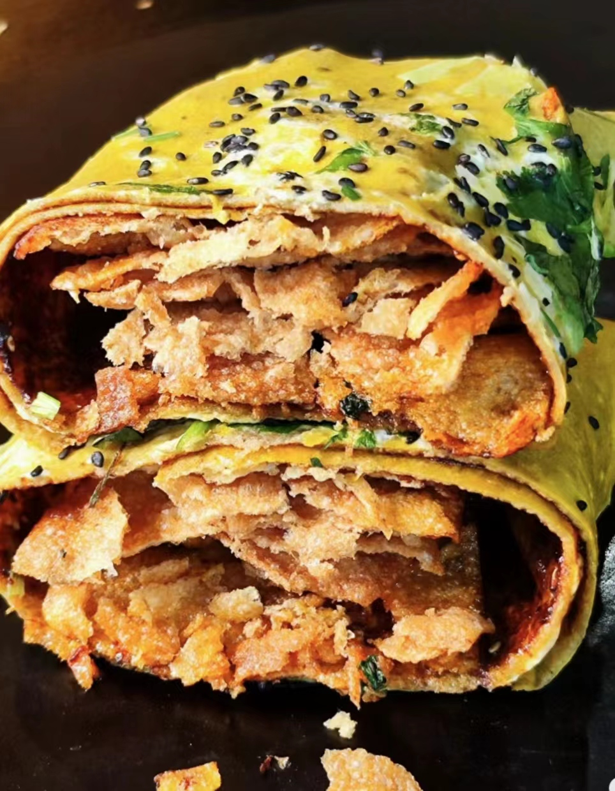
推荐店铺：南楼煎饼
价格：人均11元/套
美食特色：天津的城市名片。煎饼果子价格实惠，方便携带，且味道香脆可口，令人回味无穷。在薄薄的正宗天津绿豆面饼上，加上鸡蛋，铺上薄脆，撒上葱花，最后再涂上酱料，怎一个香字了得?
推荐指数：五颗星
锅巴菜
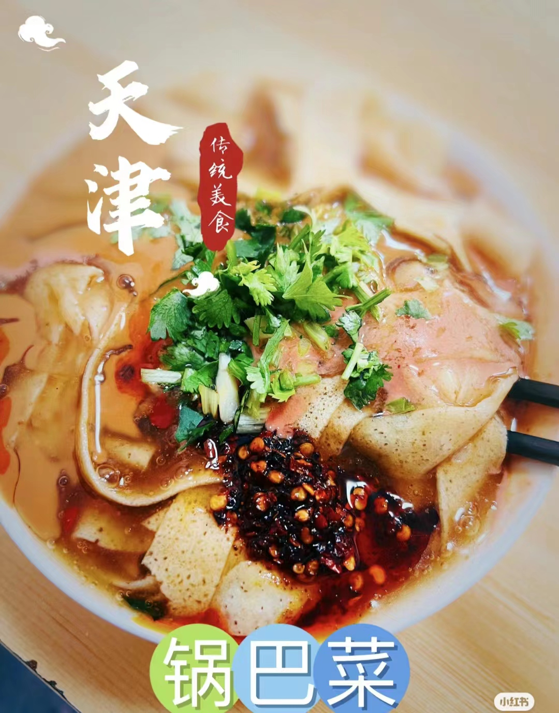 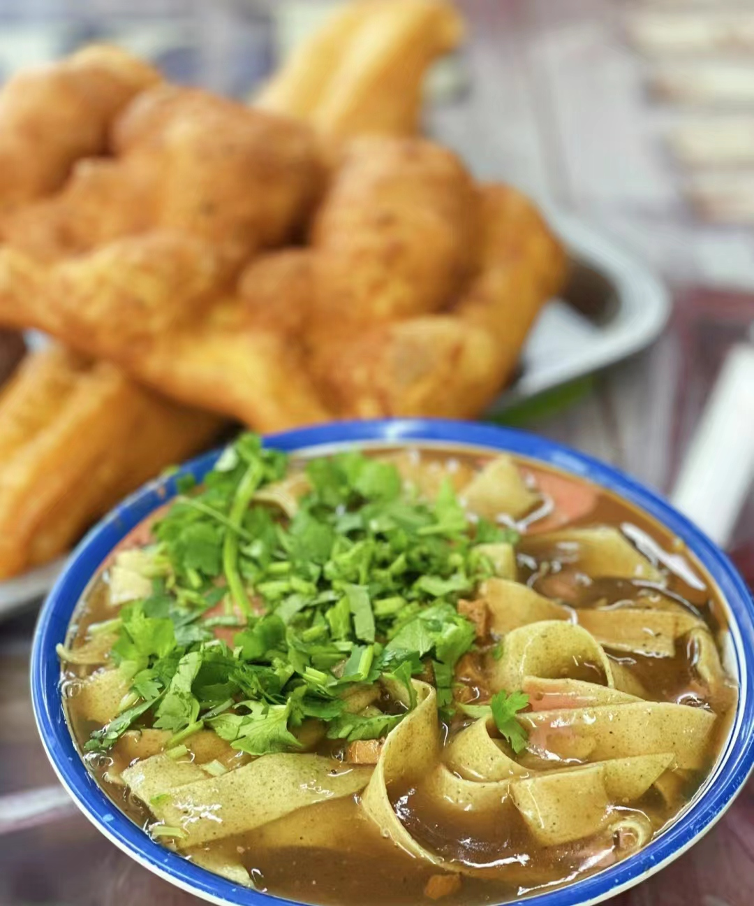 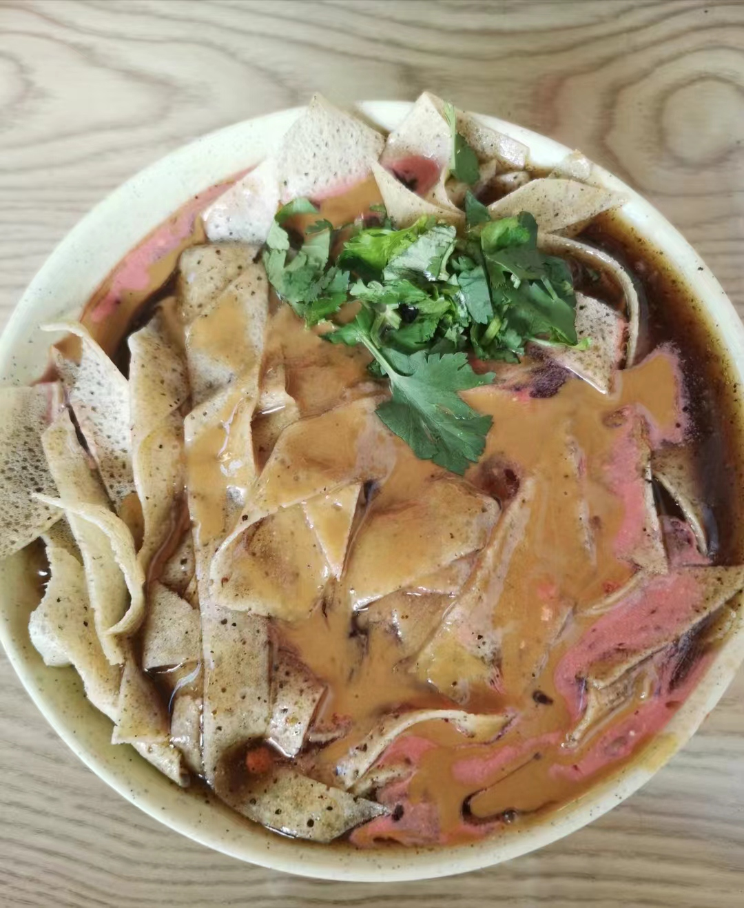
推荐店铺：真素诚&大福来
价格：人均5-7元
美食特色：天津传统特色美食，量大实惠，好吃不贵。以绿豆、小米水磨成浆，摊成煎饼，切成柳叶形小条，浸素卤中，配芝麻酱、腐乳汁等。五彩缤纷，香气扑鼻。
推荐指数：五颗星
狗不理包子
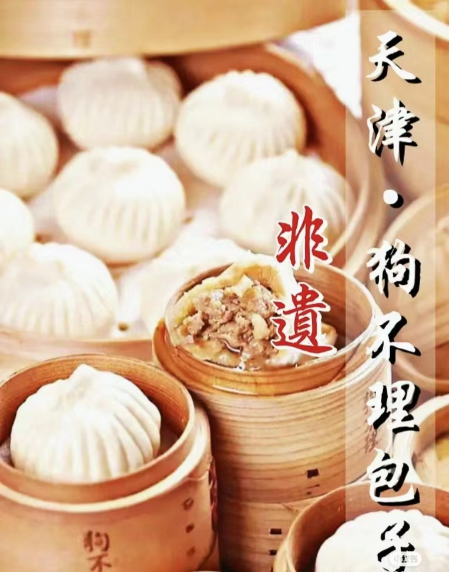 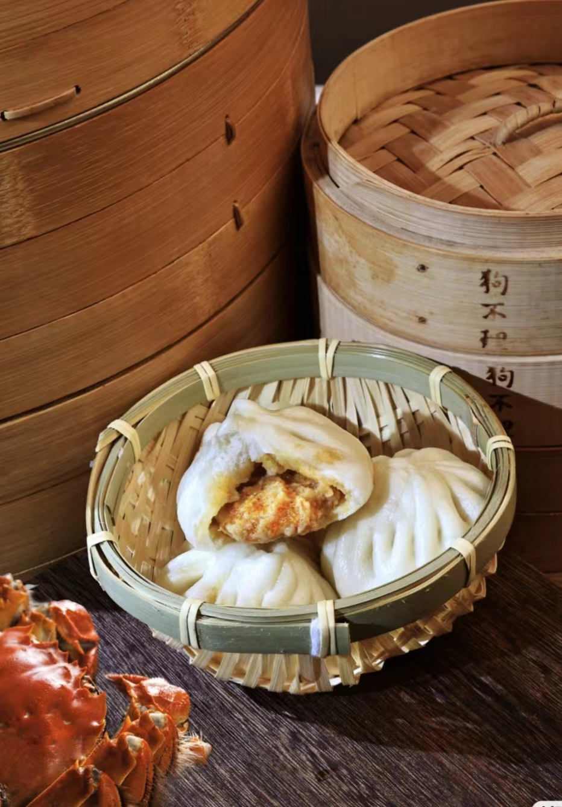 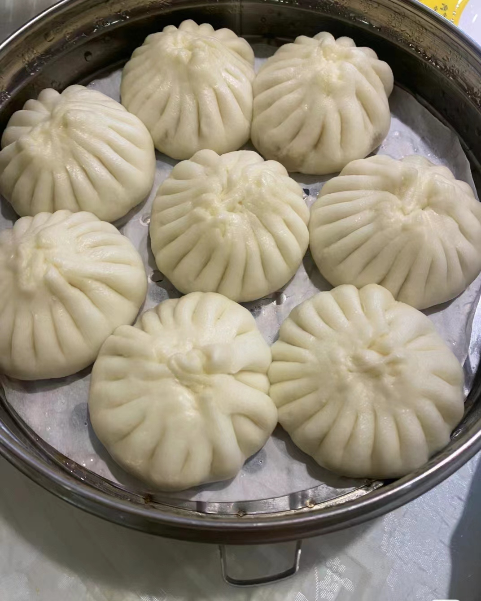
推荐店铺：狗不理
价格：一笼8个50元，人均两笼，相比较其他美食价格偏贵
美食特色：天津地标性美食。面、馅选料精细，制作工艺严格，外形美观。包子褶花匀称，不少于15个。鲜而不腻，清香适口。
推荐指数：四颗星